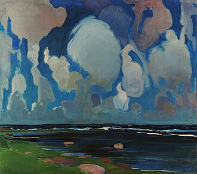

Things I find worth noticing in my daily life, with notes from the materials I use to deepen my attention and understanding.

Education is a task for beyond the books. Books can point, suggest, provoke, and illuminate, but they cannot do the noticing for us. A person can read a hundred volumes on gardening and still fail to see what the soil is doing after a week of rain. They can study philosophy and never examine the habits that shape their days. Learning may begin in pages but matures in attention.
There are things worth noticing everywhere. A mature attention creates continuity, and allows us to see life as something other than a succession of isolated moments. The payoff is not simply that we learn more, but that we inhabit our lives differently. We become participants rather than passerbys. What was once background comes forward, and what was once taken for granted becomes a source of enduring interest.
Thunder and the Clouds
Crack! The thunder gets our attention. It interrupts our conversations and momentarily rearranges our priorities. Yet the thunder is rarely the beginning of the story. Long before that loud sound reaches us, the clouds have been gathering, the air has changed, electrical charges have danced and crackled. The thunder is simply the moment when a long chain of events finally make itself known.
I suspect most of life works this way.
We notice the promotion, but not the months of steady effort that preceded it.
We notice the argument, but not the tensions that accumulated over time.
We notice the harvest, but not the patient work of tending.
Our attention is naturally drawn to the thunderclaps of life, yet there is often more to learn from the clouds.
Earthworms
Ever gone out after the rain to watch the worms wriggle at the surface of the Earth?
The worms have been there all along, of course. The rain has not created them – merely changed the conditions enough for them to become visible.
I find this to be true of many things worth noticing. Opportunities, interests, talents, problems, friendships, ideas. We often speak of discovering them as though they suddenly appeared one morning, but more often they have been quietly present for some time. What changes is not the thing itself but our ability to perceive it.
The attentive person learns to ask not only what has appeared, but what conditions have made it visible.
Crumbs and Dishes
A few crumbs on the counter, a stack of dishes in the sink.
These are not things we usually celebrate. More often, they are signs that yet another chore awaits us yet again. Yet I have come to think of them differently. Crumbs and dishes are the evidence of a domestic life well lived. They tell us that bread was baked, a meal was shared, coffee was poured,. They are traces left behind by activity, traces which the attentive person learns to read. A sink full of dishes may be inconvenient, but it is also proof that something beautiful happened there.
This, too, is a kind of education. The world is full of signs, traces, and small revelations waiting to be interpreted.
A mature attention does not stop at appearances.
It asks what preceded them, what produced them, what story they are trying to tell. Thunder points us toward the clouds. Earthworms point us toward the conditions of the soil. Crumbs and dishes point us toward the quiet activities that make a house into a home.
The more we practice this way of seeing, the more the ordinary world begins to disclose its lessons.
Daisies
A daisy is quite easy to notice, in my opinion. Its beauty announces itself freely.
In this case, attention begins where admiration ends. Most of us are content to recognize the flower and move on. Yet the student of nature lingers a little longer to kneel down, count petals, examine leaves, notice the insects visiting the bloom. A simple daisy becomes a subject of study, a source of questions.
Nature study begins with this small act of sustained attention. One needs only the willingness to remain with an ordinary thing long enough for curiosity to awaken. The daisy rewards this effort. So does the robin, the earthworm, the oak tree, the moss.
The world is full of teachers, though they rarely announce themselves as such.
The Hot Plate
A hot plate is not usually regarded as an object of wonder. It is a tool, and a familiar one at that. Yet even the simplest kitchen element rewards attention.
How does it convert electricity into heat? Why does one burner remain warm long after it has been switched off? What materials allow it to withstand years of expansion and contraction?
Like the daisy, the earthworm, and the gathering storm, the hot plate reveals greater complexity the longer we spend with it.
This, perhaps, is the central lesson of things worth noticing. The world is richer than it first appears. Clouds teach us to look for conditions rather than events. Earthworms remind us that much exists before it becomes visible. Crumbs and dishes reveal the traces left behind by meaningful activity. Daisies invite us to move beyond admiration into study. Even a hot plate, sitting quietly in the kitchen, contains lessons for the curious observer.
Education is a task for beyond the books because the world itself is always offering instruction. The attentive person learns to treat ordinary experience as a subject worthy of examination. They ask questions, they follow observations, and they remain curious.
In doing so, they discover that learning is not confined to classrooms, libraries, or courses of study. It is woven into daily life, waiting in gardens, kitchens, sidewalks, storms, and flowers. The lessons are abundant. The challenge is learning to notice them.